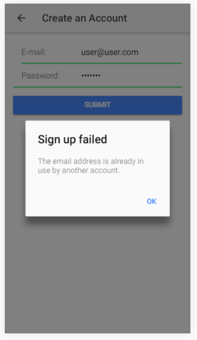

Service
It makes sense to put our code that connects to the backend in a different file. This will be the service. Create a new folder in the src folder called services. In the folder, create a new file named auth.ts and add the code below.
This is a service so we need to add it to the provider array in app.module.ts
Make sure you add the import statement at the top.
Next, we modify the signup.ts to use the service.
Okay, just notice there is no way of getting to our signup page since the signin is the root page.
Modify the signin.html
All we did was to define a property that will push the signup page to the stack of pages when the button is clicked. Add the property in the signin.ts
Make sure to import the page at the top.
Navigate to the signup page, fill the form and submit and holla, the user is created. How cool is that! Head over to the firebase website, in authentication, check the users tab, you will see the user created in firebase.
Loading Controllers
As the requests is made to the backend, we can show a loading controller. This is quite easy to implement. A similiar controller is the Alert controller which we can use if there is any errors.
modify signup.ts
Working with these types of components is easy. You inject it to the constructor. Next, initialize it and present it. In the case of the Loading Controller, it can be dismiss using the dismiss function.
Create a new user. Try creating a user with the same email, you will get an error alert

Sign in
Just like the signup page, the signin process is very easy to implement. We'll start with the service. Modify the src/services/auth.ts and add the sign in function
Next, we need to modify the signin.ts to use the function.
The code is quite intuitive. After a successful sign in, we redirect to the homepage.
Try this: Add a Loading and Alert Controllers just like we did in sign up.
Building the App
We are ready to build our app so that we can have an apk to install in our device. For ios developers, you just need to follow the official documentation for deploying ionic apps.
Run the command below
For android users, download the SDK Manager and install the required tools. Check Project 1: deploy for more detailed instruction
Run command below to add android
After adding the platform, build the app by running
This builds an apk which we can see in the platform/android/build/outputs/apk folder. Install it and test it out